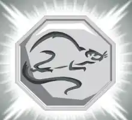

Dentre as virtudes dos nativos de Rato estão o entusiasmo, a sociabilidade, a franqueza e a alegria é um nativo que gosta de viajar, é esportista, bem intencionado e independente. Além disso, é ambicioso e otimista. “Mas, às vezes, se perde no excesso de confiança”. Os nativos do signo de Rato são as pessoas nascidas nas seguintes datas:
Talismã do Rato
Esse talismã é capaz de dar vida a objetos inanimados, como estátuas e brinquedos